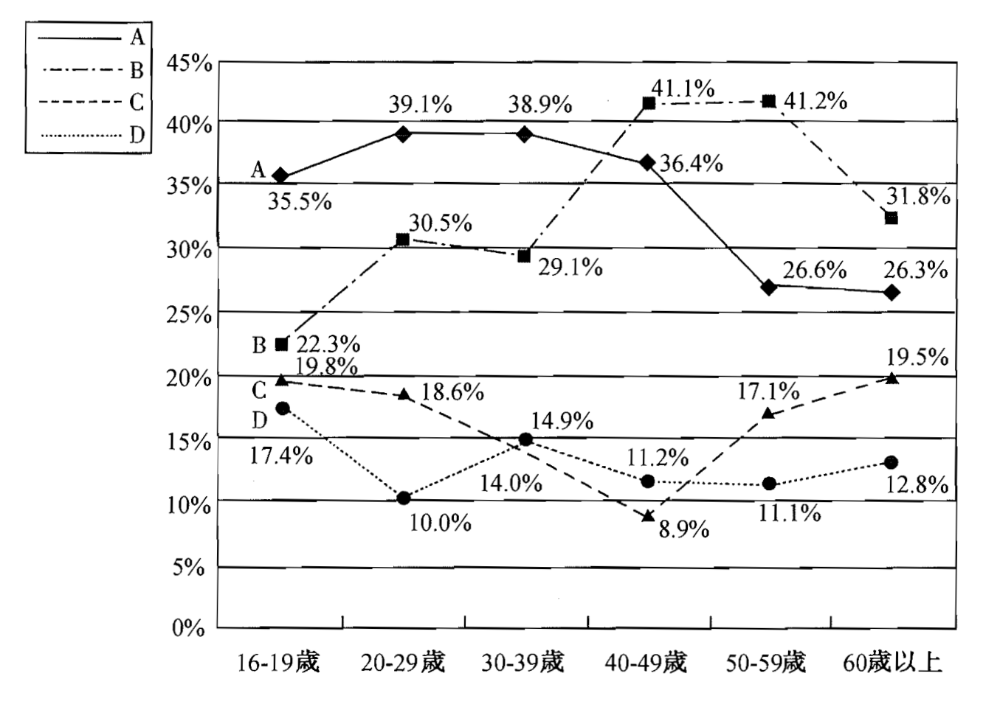

（1）
成功
私たちの時間の感覚は、人によって、また立場によってもかなり違います。電話でよく「少々お待ちください」と言って待たされます。3分待たされたとしますと、待った人の感覚ではその3倍、9分ぐらい待たされた気がします。この時、待たせた方は実際が3分でも、その3分の1の1分ぐらいにしか感じないのです。つまり待たせた人と待たされた人の時間感覚の差は（ ① ）倍にもなるのです。そのことをよく承知したうえで「お待たせいたしました」を言わないと、お客さまを不快（注1）にさせることになります。
本来、時間に対する日本人の感覚は、きわめて（注2）神経質（注3）だと言われます。交通機関（注4）のダイヤの正確さなどにもそれがよく表れています。
ところが、その反面、日本語の中にはきわめて曖昧に時間を伝えることばが数多くあります。「しばらくお待ちください」「のちほどお電話さしあげます」「まもなく着くと思います」「少々時間をください」などの言い方は日常的によく使われています。
応対の中で「のちほどこちらからお電話さしあげます」と言った数人の人に、「『のちほど』というのは何分ぐらいの時に使いますか？」と訊ねたことがあります。驚いたことに答えは千差万別（注5）です。2、3分、10分か15分、30分ぐらい、1時間、2、3時間、その日のうち、最大1週間以内と答えた人もいます。そして、「のちほど」と言われた相手の客も「のちほどって何分後ですか」と聞き返す人は皆無（注6）に近いのです。「ではよろしくお願いします」で終わってしまいます。客の方が「のちほど」を何分ぐらいと理解したかです。 言った方にそれだけ幅があるのですから……。
「のちほど電話すると言ったから、出かけないで待ってるのに、かかってこないじゃないか」と苦情になったこともあります。
きちんと時間のメド（注7）を言う人も、もちろんいます。時間のメドが立たない時に、「のちほど」というあいまいで便利なことばを使うのでしょう。しかし、メドが立たない場合でも、「担当がただ今席を外して（注8）おりますので、何分後というはっきりしたお約束が出来かねます。申し訳ございません」と、はっきり言えない理由をことばで伝えてください。
また、メドが立つ場合でも、10分後と思ったら「20分後ぐらいまでにはお返事出来ると思います」。30分後と思ったら「1時間以内には……」というように、多め多めの時間を伝えてください。人間の心理として、「30分後」と言われても20分後ぐらいから待ち始めます。25分も経つとイライラが始まります。30分後に正確に返事が出来たとしても、あまり満足感はないのです。それが「1時間以内には」と伝えておけば、30分後に返事がくれば「早く調べてくれたな」と思って満足してくれるものです。
（岡部達昭『心くばりの話しことば』日本放送出版協会による）
（注1）不快：いやな気持ち
（注2）きわめて：とても
（注3）神経質：こまかいことまで心配する性質
（注4）交通機関のダイヤ：バスや電車などの出発・到着時刻
（注5）千差万別：種類が多く、違いもいろいろあること
（注6）皆無：まったくないこと
（注7）メド：だいたいの見当
（注8）席を外す：自分の席を離れる
（1）徹子から電話がありました。今から5、6年前のことです。
「ねえ、ママ、千葉へ行ってきたの」
電話の声が弾んで（注1）います。きっと何かおもしろいことがあったんだろうと思い、私も「そうだったの」と相槌を打ち（注2）ながら、彼女の次の言葉をワクワクしながら（注3）待っています。
「窓から太陽の沈む様子が、この世のものとは思えないほど美しいと評判の旅館があってね。それを見に、10人ぐらいの有志（注4）で出かけたわけ」
ちょっとひと呼吸おいてから、また話しはじめました。
「昼間の間は散歩したり、みんなで楽しく遊んでね、そろそろ時間になったわけ。さあ、時間だ！というので、みんなで窓のそばに座り、固唾をのんで（注5）待ってたの。「ホラ、沈むわよ」 「ウワーッ、すごい」 「この偉大な夕日にかなう（注6）ものはこの世には何もない」なんて口々に言いながら、あまりの素晴らしさに胸打たれて、最後はもう、みんな声も出なくなっちゃったほどだったのね。そのとき突然私が言ったのよ」
「あら、何て言ったのよ」
もうここまでくると好奇心（注7）剥き出しです。
「ここで雑魚寝（注8）して、明日の朝、また太陽が出るのを見ない？」って。一瞬みんな私の言葉が理解できなくて、その後一斉に後ろに引っくり返ったのよ。畳の部屋でほんとよかったわ」
私には、なぜみんなが引っくり返ったのかが理解できません。
「あら、どうしてそれがおかしいわけ。あなた何も間違ったこと言ってないじゃないの」
（中略）
「やっぱりママもそうなんだ。（ ④ ）。ね、わかった？」
「あっ、そうだわ。太陽は東から昇って西に沈んだものね」
ようやく私も納得。
（黒柳朝『トットちゃんと私』主婦と生活社による）
（注1）声が弾む：普段とは違う、うれしそうな声の調子になる
（注2）相槌を打つ：人の話を聞きながら、「はい」「ええ」などと言って調子を合わせる
（注3）ワクワクしながら：期待しながら
（注4）有志：あることに関心を持ち、一緒に何かをしようとしている人
（注5）固唾をのむ：どうなるかと緊張しながら見守る
（注6）…にかなう：…と同じくらいすばらしい
（注7）好奇心：珍しい物事に対する興味や関心
（注8）雑魚寝：狭い場所でおおぜいの人が一緒に寝ること
Cases & principal differences →（2）子供の授業参観（注）に行って驚いたことがあります。先生が、ある問題について「どう思いますか」と質問すると、生徒たちが手をあげ、指された生徒が答えた。次に、「ほかの人は」と先生がきくと、またみんなが手をあげ、別のだれかを先生が指します。すると、その生徒がさっきの生徒と同じことを答えたのです。そうやって次々に何人もの生徒がみんな同じ答えをしました。これには私、びっくりしました。同じ答えならいわなくてもいいのにと思うのですが、先生はそれを期待しておられるようでした。むしろ、別の答えが出てくると困ってしまうのかもしれません。
しかし、無理しても別な答えを出すこと、あるいは人と同じことはいわないことが、大事だと私は思います。クラスが40人いたら40通りの答えがあるべきです。先生には、「（ ③ ）」と聞いてほしかった。そして、もし出てきた別の答えが間違っていても、それはおもしろいね、とまずほめて、しかし、ここの部分は考え直してみたらどうでしょうとか、ここに無理があるかもしれないと、言っていただけたらと思いましたね。
（山本毅雄『21世紀の本の読み方』岩波書店による）
（注）授業参観：教室に入って授業を見学すること
（3）私たちはどんな時に悩むのだろう。就職を決める時、A社にするかB社にするかで悩む。今交際している彼女と結婚するべきかどうかで悩む。つまり何かの選択場面、決定場面に立たされた時に悩むのである。しかし、若者たちは選ぶことができない。いやその前にそもそも（注1）選ぼうとしていない。選ぶ意志がないのである。
ある調査によると、今の若者のうち「どの会社に就職するか」を「自分で決める」のはわずか18パーセント。約5割（注2）が「父・母・友だちの意見で決める」と答えている。「なるようになる」と答えた者も、約3割いる（筒井俊介、修士論文）。
（ ① ）驚きなのは「恋人」を「自分で選ぶ」若者が、わずか29パーセントであること。「なるようになる」が4割で一番多い。おそらく合コン（注3）か何かでたまたま隣にいた人と、何となくつきあい始めるケース（注4）が多いのだろう。
「今つきあっている恋人と結婚するかどうか」を「自分で決める」若者はさらに少ない（22パーセント）。約2割が母の意見、約2割が友だちの意見で決めると答えている。
これでは、悩みが生じないのも当然である。
就職と結婚は、人生の二大イヴェント（注5）。よい配偶者（注6）に恵まれて、自分を生かせる（注7）仕事に就く。これが今も昔も、幸福の二大条件である。この二つを自分で選ばないのなら、たしかに大した悩みも葛藤（注8）も生まれてこないだろう。しかしそれで果たして、自分の人生を生きていると言えるだろうか。
けれど、それが今の若者の「当たり前」なのである。
（諸富祥彦『〈むなしさ〉の心理学——なぜ満たされないのか』講談社現代新書による）
（注1）そもそも：はじめから
（注2）…割：1割は10%
（注3）合コン：独身の男女が出会いの場として開く集まり
（注4）ケース：場合
（注5）イヴェント：行事
（注6）配偶者：夫、または妻
（注7）生かす：よさ、能力を十分に引き出して使う
（注8）葛藤：反対の二つの気持ちの間でどうしようかと悩むこと
（1）子どもたちの何かが変わってきた——。いまの子どもたちが一番変わったところは、自分を語れなくなったこと。少し前の子どもたちは、「どうして悪いことをしてしまったの？」と問いかけると、「どうしてそうなっちゃったんだろう」と、それなりに（注）一生懸命考えて答えを出してよこしたものだが、いま、そう問いかけても答えられなくなっている。おしゃべりはよくするのに、自分の心を言葉にするのは苦手で、自分を理解してもらおうという努力がないのである。これは、自分を語るという場が少なく、経験もないからに違いない。
（野代仁子『非行を叱る——カウンセラーのノートから』文藝春秋による）
（注）それなりに：その人ができる範囲で
（2）イアン様
先日はお便りありがとうございました。こちらこそごぶさたしております。卒業記念発表会のご案内状もありがとうございました。ホームステイでわが家にいらっしゃった時は、まだ来日なさったばかりでしたのに、もう2年にもなるのですね。ほんとうに早いものです。あの時はほとんど日本語が話せなかったので心配でしたが、発表会では大勢の人の前で日本語で話されるのですね。本当に驚きました。発表会へは、家族そろって、うかがうつもりです。イアンさんの発表をお聞きするのが今からとても楽しみです。
ところで、その後は何かご予定がありますか。よろしければ一緒にお食事でもいかがでしょうか。ご都合をお聞かせください。
では、発表会当日を楽しみにしております。
3月10日
田中よしこ
（3）初対面の人（注1）を目の前にした時は、どんな人でも緊張感を持って接するでしょう。相手が不快にならない言葉を丁寧に選んでいるはずです。ところが、2回、3回と顔を合わせるうち、次第に慣れが生じます。その時が、人づきあいがスムーズになる（注2）かどうかの分岐点（注3）ではないかと思うのです。親しくなりつつあるからこそ距離をおき、もう一度相手をよく見つめてみること、そして、相手の個性を理解した上での接し方を工夫していくことが大切なのではないでしょうか。
（斎藤茂太「究極の言葉は『ありがとう』」『PHP』平成14年1月号PHP研究所による）
（注1）初対面の人：初めて会う人
（注2）スムーズになる：順調に進むようになる
（注3）分岐点：ものごとの分かれるところ
Cases & principal differences →（4）人間とは不思議なもので、年をとってもいろいろな新しいことを経験したいという気持ちがある。例えば自分で茶碗を作ってみるとか、ピザ（注1）を焼いてみるとか、さまざまな新しい挑戦（注2）がある。
しかし、当然のことながら、それがうまくいくことは少ない。茶わんはぜんぜん丸く作れないし、ピザはおいしくない。だが、それを恥ずかしく思う必要はないのだ。最初からうまくできるなら、世の中のさまざまな学校や修業（注3）は必要ないことになる。初めはうまくいかないのが当たり前なのだ。
それなのに、家族の者に「変な形」、「まずい」などと言われると、「もう二度と作らない」と思ってしまう。初めての挑戦には、周りの人々の理解と応援も必要なようだ。
（注1）ピザ：イタリア料理の一つ
（注2）挑戦：困難なことに立ち向かっていくこと
（注3）修業：技術を習い、身につけること
（5）日本人は「察し合い」の会話をすると言われている。「察し合い」とは、言葉で表現されなくても相手の気持ちや状況を想像してお互いに理解し合うことである。次のグラフは文化庁が2002年1月に行った世論調査（注1）で「察し合い」の会話についてたずねた結果である。
それによると、「ア：これからも察し合いの文化を伝えていくべきだ」と考えている人は少なく、どの世代（注2）も20%未満で、40代が最も少なかった。また、どの世代も10…20%が「イ：誤解を招くこともあるので、相手に『察し』を期待しない方がいい」と考えており、「ウ：これからは、きちんと言葉に出して言うべきだ」と考えている人がさらに多いことを考えると、これからは「察し合い」の会話が減っていくのではないかと思われる。
40代、50代では約40%が「ウ」と回答しているが、「ア」の回答数と合わせて考えると、「察し合い」の会話に一番否定的なのは40代だと言えそうだ。
それに対して、10…30代では「エ：相手や状況によって、察し合いの会話をするかどうか使い分けるといい」という回答が一番多かった。

ア：これからも察し合いの文化を伝えていくべきだ
イ：誤解を招くこともあるので、相手に「察し」を期待しない方がいい
ウ：これからは、きちんと言葉に出して言うべきだ
エ：相手や状況によって、察し合いの会話をするかどうか使い分けるといい
（注1）世論調査：ある問題について、集団や社会の意見を調べること
（注2）世代：同じくらいの年の人たちの集まり